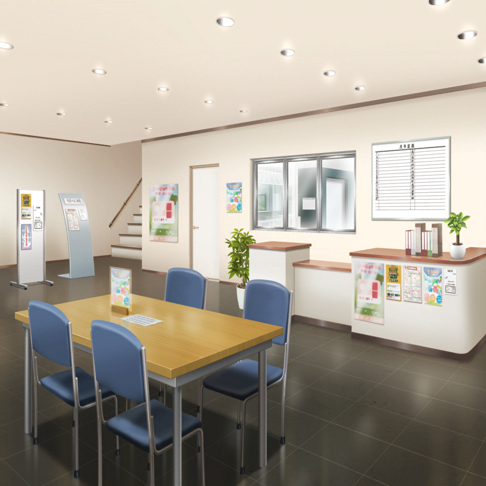
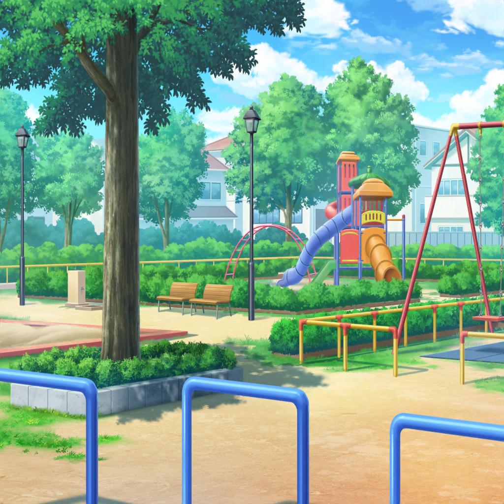

公民館内
沙綾
わ～、涼し～。
ここまで結構歩いたもんね。
私、汗かいちゃったよ
有咲
自販機はー、っと……
子供１
きゃはははははっ！ こっちだよー！
子供２
待ってよー！
香澄
わ！ なんかこの公民館って、すっごい子供がいるね？
はぐみ
はぐみも思った！
ほら、あそこでも女の子が集まってなんかやってるよ？
沙綾
すごい賑やかな公民館だね。
奥の方の部屋から、子供の笑い声が聞こえてくるんだけど
香澄
ホントだ～。
なんかやってるのかな？
私ちょっと見てみるね！
はぐみ
はぐみも行ってみる！
有咲
……ん？
子供の笑い声に混じって、聞き覚えのある声が
聞こえる気がするんだけど……気のせいか？
沙綾
え？ 有咲も思った？
私もなんかそんな気がしたんだけど……
この声って確か……
香澄・はぐみ
え！？ こころん！？
こころ
あら？ 香澄にはぐみね？
どうしたのこんなところで？
はぐみ
えー！？ なんでここにこころんがいるの！？
どういうこと！？
こころ
あたしは、この公民館にたくさんの子供がいるのを
見かけたから、みんなを笑顔にするために
人形劇をやってるのよ！
香澄
人形劇？
こころ
ええ！
人形はこの公民館にあるものを使ってるけど、
とっても盛り上がってるわ！
はぐみ
え～！？ そうだったんだ！？
こころ
だって、こんなにたくさん子供達がいるのよ！
みんなが笑顔になれば、世界中が笑顔になる日も近づくもの！
はぐみ
す、すごいよ、こころんっ！
やっぱりはぐみ、こころんのこと尊敬しちゃうな～！
こころ
はぐみと香澄は、ここで何をしていたのかしら？
香澄
あと、有咲とさーやもいるよ！
私達は、昔二人で遊んだ公園を探して、ここまで来たの！
そしたら――
女の子
ねーねー、おねーちゃん！
続きは～！？ 人形劇の続きやってー！
こころ
わかったわ！
それじゃあ、あたしは人形劇の続きを
やらないといけないから、行くわね！
はぐみ
あ、こころん！ 人形劇、頑張ってね！
こころ
もちろんよ！ みんなを笑顔にするわ！
で、どこまでお話したっけ？
女の子
えっとねー、ペンギンが動物園を抜け出しちゃうところ！
早く～、早く～！ きゃはははははっ！
有咲
弦巻さんって、こんなこともしてるんだな。
なんかホントにすげーやつだな……
沙綾
う、うん
香澄
あのさ、私、ちょっと思ったことがあるの……
はぐみ
ん？ どうしたのかーくん？
香澄
ここって元々は私とはぐの思い出がたくさん詰まった公園で、
その公園がなくなっちゃったことが、
最初はすっごい悲しかったんだけど……
香澄
けど今の子達は、この公民館で私達と同じ様な
楽しい時間を過ごしてるんだね？
香澄
そう思ったら、なんかすっごいホッとしちゃったっていうか……
はぐみ
うん！ はぐみもそれすっごいわかる！
はぐみ達みたいな楽しい思い出、
この場所でたーくさん作って欲しい、って思ったもん！
沙綾
確かに……
さすが香澄！ いいこと言うね～
有咲
はは……香澄らしい感じ方だよな？
……ん？ あっちにいた女の子達が何か始めたぞ？
なんか紙切れみたいなの持ってるけど……今度はなんだ？
沙綾
あ、あれはもしかしたら七夕の短冊じゃないかな？
お願いごとを書いて、笹につるすやつ
香澄
……あ！
ねえ、はぐ！ そういえばさ……

かすみ
ねーねー、はーちゃん？ そのかみって、なーに？
はぐみ
これはねー、たなばたのおねがいごとをかくかみなんだー！
ここにおねがいごとをかくと、かなっちゃうんだって！
かすみ
えー、すごいねー！
それわたしもかきたーい！
はぐみ
いいよー、いっしょにかこー！
とーちゃんがおみせにかざってくれるんだってー！
はぐみ
あ～！ そういえばあったね、そんなこと！
確か、公園のベンチで二人で書いたんだよね！？
香澄
そうそう！
あの時、私、なんてお願いごと書いたんだろ？
はぐは覚えてる？
はぐみ
ううん、覚えてないよ。
短冊を書いたことも、今はじめて思い出したもん！
有咲
うわ～、それすっげー気になるな～
沙綾
あのさ、その短冊って、はぐみのお店の前に飾ったんでしょ？
はぐみ
うん。
たぶんとーちゃんが飾ってくれたと思うよ
沙綾
もしかしたら……
その短冊って、まだはぐみの家にあるんじゃない？
はぐみ
……あ！ そうかも！
この前、お店の前に飾りをつけた時、
倉庫の中に、昔の笹飾りも置いてあったよ！
香澄
ホントに！？
有咲
ここまで来たら……
それを見ないわけにはいかねーだろ、香澄
香澄
うん！ 絶対見たい！
それじゃあ、はぐのおうちに行ってみようっ！
はぐみ
おーっ！